Geschichtliche Entwicklung
Geschichte
Vom Militärstandort zum selbstverwalteten Gemeinschaftsprojekt: das Haus Eiswerderstraße 13 auf der Insel in der Havel.
-
19. Jh.Militärstandort
Pulver, Patronen, Geschütze
Die Insel Eiswerder – inmitten der hier zum Spandauer See erweiterten Havel – entwickelte sich im 19. Jahrhundert mit ihren Rüstungsfabriken zu einem bedeutenden Militärstandort: mit Pulver-, Patronen- und Munitionsfabrik, Geschützgießerei und Artilleriewerkstatt – und dem Königlichen Feuerwerkslaboratorium. Mehr zur Insel auf Wikipedia.
-
1893/94Das Gebäude
Verwaltung der Schießpulververarbeitung
Das Militärgebäude wurde 1893/94 errichtet – anfangs zweigeschossig, später dreigeschossig. Es diente zunächst als Pionierunterkunft, dann als Verwaltungsgebäude für die Schießpulververarbeitung. Mehr zu den Ziegeln dieses Hauses.
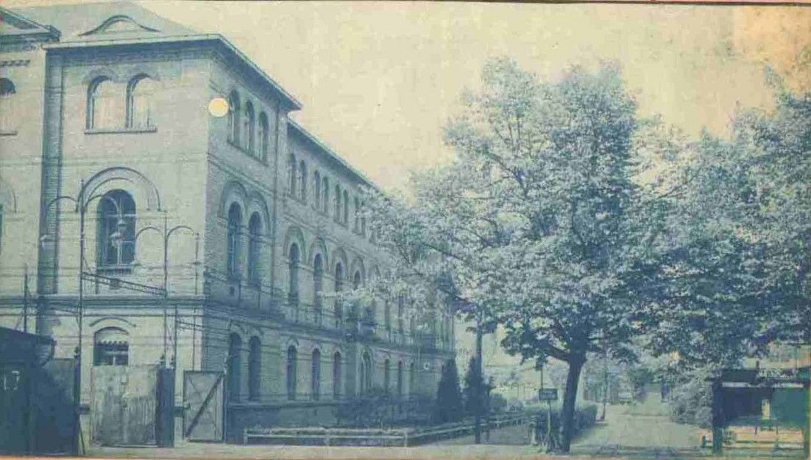
Südost-Seite: zwei kleine Eiben vor dem damaligen Eingang 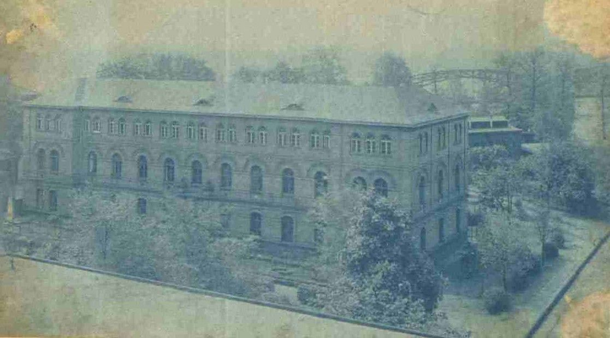
Östliche Nord-Ansicht vor der Eiswerderbrücke 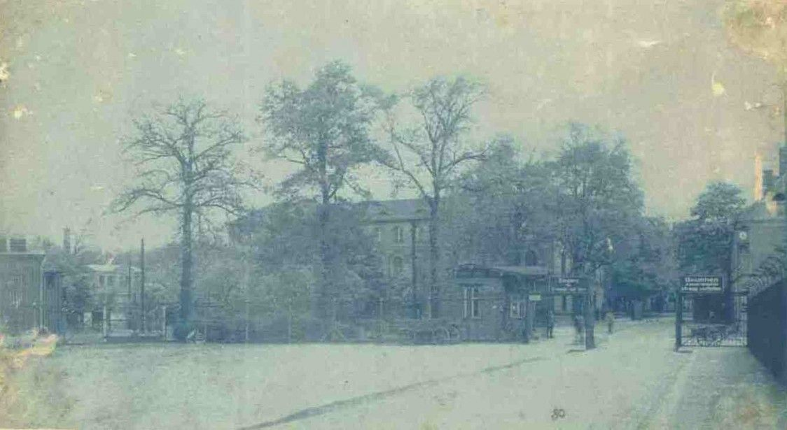
Südliche West-Ansicht 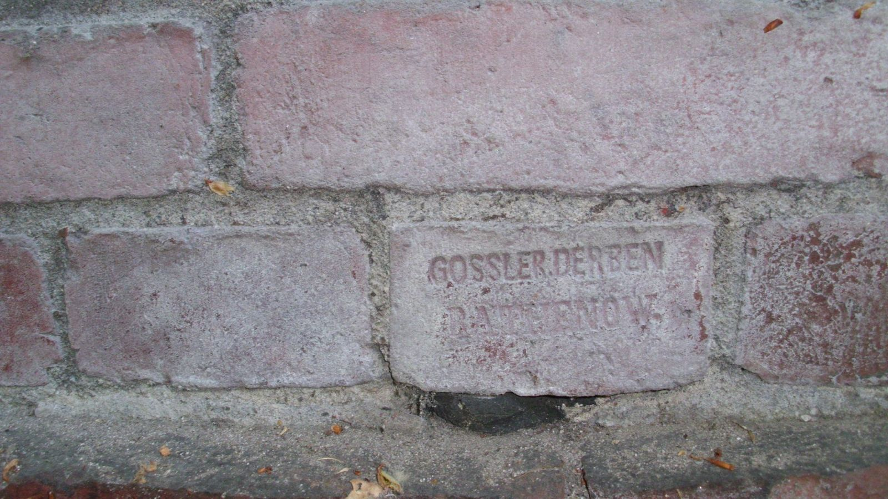
Historischer Ziegel mit Stempel im Mauerwerk -
1945–2006Schulhaus
Gottlob-Münsinger-Schule
Von 1945 bis 2006 wurde das Haus als Berufsoberschule genutzt. Die „Gottlob-Münsinger-Schule“ war nach dem Spandauer Bezirksbürgermeister (1946–1949) Gottlob Münsinger benannt; in den 1970er Jahren gab es hier die Berufsausbildung für Binnenschiffer und Schiffsbauer. 2006 zog die Berufsschule in das Spandauer OSZ Bautechnik I in die Nonnendammallee 140–143 um.
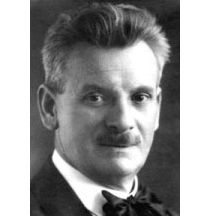
Gottlob Münsinger -
1995Denkmal
Eintrag in die Denkmalliste
1995 erfolgte der Eintrag als Baudenkmal in die Denkmalliste von Berlin unter der Nr. 09080557 (Denkmalliste Berlin, siehe Seite 663).
Baudenkmal-Schild 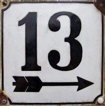
Denkmal-Hausnummer -
2021Naturdenkmale
Drei geschützte Bäume
Unter der Naturschutzverordnung NatDenkmSchV BE2021 (Anlage 1) sind auf dem Grundstück Eiswerderstr. 13–13a als Naturdenkmal-Bäume eingetragen: 5-36/B (VIII-38/B) eine Rot-Buche (Fagus sylvatica) und 5-37/B (VIII-39/B) zwei Gewöhnliche Eiben (Taxus baccata) – jeweils in der Kategorie „Schönheit“. Verordnungstext.
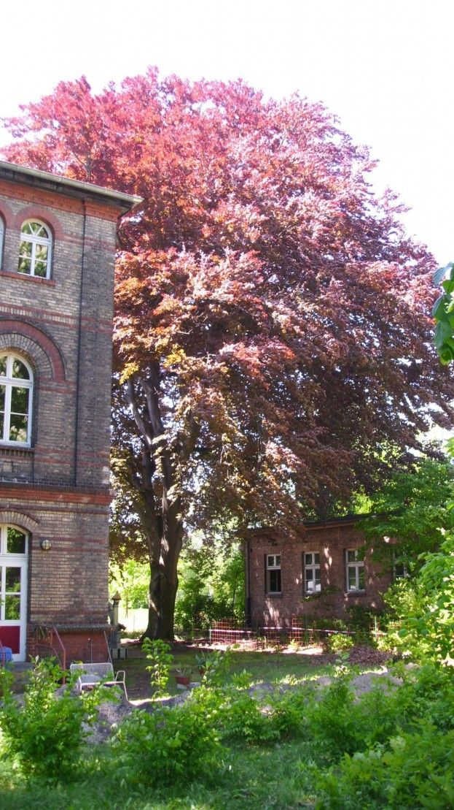
Rotbuche im Mai 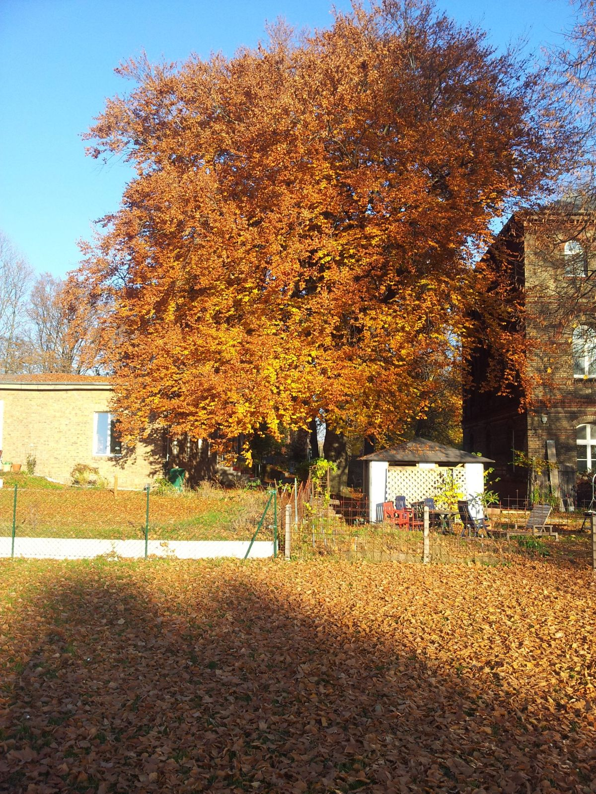
Rotbuche im Juni 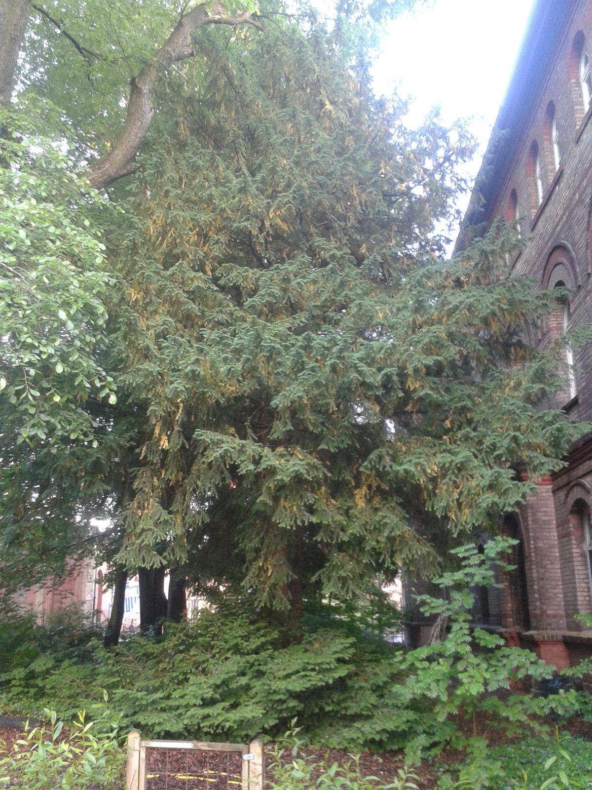
Eiben im Mai 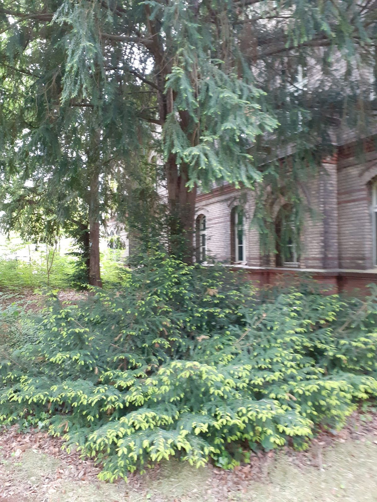
Eiben im November 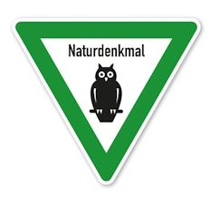
Schild Naturdenkmal -
seit 2010selbstverwaltet
Von Grund auf neu
Seit 2010 verwalten wir das Haus selbst und nutzen als gemeinnützige Gesellschaft diese ehemaligen militärischen Flächen – mit ihren Folgen einer teilweisen Kontamination von Grund und Boden – im Rahmen eines ökologischen Gesamtkonzeptes im Sinne des Kreislaufdenkens „Feuer / Wasser / Erde / Luft“ und der nachhaltigen Verbindung von Ökonomie, Ökologie, Denkmal-, Natur-, Umwelt- und Klimaschutz: von Grund auf neu zum Arbeiten und Leben.
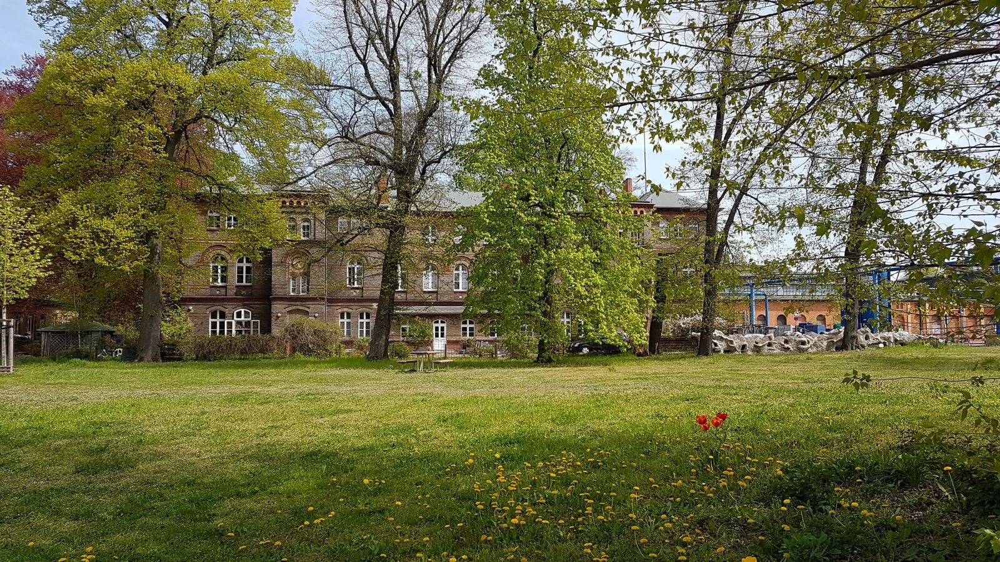
Ansicht von der Park-Seite
Der Veranstaltungsraum
InselSalon mieten
Rund 80 m² für Tagung, Seminar, Konzert, Ausstellung oder Ihre Feier – Park und Havel vor der Tür.